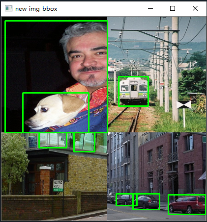

4.1 mosaic 解读
🎉代码仓库地址：https://github.com/Oneflow-Inc/one-yolov5 欢迎star one-yolov5项目 获取最新的动态。 如果您有问题，欢迎在仓库给我们提出宝贵的意见。🌟🌟🌟 如果对您有帮助，欢迎来给我Star呀😊~
引言
\(YOLOv5\) 在训练模型的时候使用🚀图像空间和色彩空间的数据增强(在验证模型的时候没有使用)，通过训练时采用数据增强 从而使得每次加载都是新的和唯一的图像（即原始图像+3个随机图像）如下图所示。

图4.1 数据增强。经过数据增强后图像不会以相同的方式呈现两次。
图片来源：https://docs.ultralytics.com/FAQ/augmentation/
超参数文件
数据增强默认使用配置超参数文件hyp.scratch.yaml， 下面以hyp.scratch-low.yaml文件部分参数为例，具体参数解析可见附件 表2.1
Mosaic

图4.2 Mosaic数据增强。把4张图片，通过随机缩放、随机裁减、随机排布的方式进行拼接。
Copy paste
 图4.3 分割填补
图4.3 分割填补
Random affine
(Rotation, Scale, Translation and Shear)（旋转、缩放、平移和剪切）

图4.4旋转、缩放、平移和剪切 图像
MixUp

图4.5 图像融合
Albumentations
YOLOv5 🚀 集成了Albumentations(一个流行的开源图像增强包)。
可以通过自定义数据集更好地训练，世界上最棒的视觉AI模型😃!
 图4.6 Albumentations
图4.6 Albumentations
Augment HSV
(Hue, Saturation, Value)
色调、饱和度、曝光度

图4.5 色调、饱和度、曝光度
Random horizontal flip
(随机水平或翻转)
 图4.6 随机水平或翻转
图4.6 随机水平或翻转
Mosaic 数据增强算法
Mosaic 数据增强算法将多张图片按照一定比例组合成一张图片，使模型在更小的范围内识别目标。Mosaic 数据增强算法参考 CutMix数据增强算法。CutMix数据增强算法使用两张图片进行拼接，而 Mosaic 数据增强算法一般使用四张进行拼接，如下图所示。 
Mosaic方法步骤
- 随机选取图片拼接基准点坐标 \((x_c，y_c)\)，另随机选取四张图片。
- 四张图片根据基准点，分别经过 尺寸调整 和 比例缩放 后，放置在指定尺寸的大图的左上，右上，左下，右下位置。
- 根据每张图片的尺寸变换方式，将映射关系对应到图片标签上。
- 依据指定的横纵坐标，对大图进行拼接。处理超过边界的检测框坐标。
Mosaic方法优点
- 增加数据多样性，随机选取四张图像进行组合，组合得到图像个数比原图个数要多。
- 增强模型鲁棒性，混合四张具有不同语义信息的图片，可以让模型检测超出常规语境的目标。
-
加强批归一化层（\(Batch \ Normalization\)）的效果。当模型设置 \(BN\) 操作后，训练时会尽可能增大批样本总量（\(BatchSize\)），因为 \(BN\) 原理为计算每一个特征层的均值和方差，如果批样本总量越大，那么 \(BN\) 计算的均值和方差就越接近于整个数据集的均值和方差，效果越好。
-
Mosaic 数据增强算法有利于提升小目标检测性能。Mosaic 数据增强图像由四张原始图像拼接而成，这样每张图像会有更大概率包含小目标。
Mosaic源码解读
思路概括：将一张选定的图片和随机的3张图片进行随机裁剪，再拼接到一张图上作为训练数据 ,可见本文 图4.2。
这样可以丰富图片的背景，而且四张图片拼接在一起变相的提高了 \(batch-size\) 大小，同时在进行 \(batch \ normalization\)（批量归一化）的时候也会计算四张图片。
这中方式能使得 \(YOLOv5\) 对于 \(batch-size\) 大小对模型训练精度的影响。
下面对utils/dataloaders.py中Mosaic的实现进行解读。
def load_mosaic(self, index):
# YOLOv5 4-mosaic loader. Loads 1 image + 3 random images into a 4-image mosaic
"""
@param index: 需要获取的图像索引
@return: img4: mosaic和仿射增强后的一张图片
labels4: img4对应的target
"""
labels4, segments4 = [], []
# 获取图像尺寸
s = self.img_size
# 这里是随机生成mosaic中心点
yc, xc = (int(random.uniform(-x, 2 * s + x)) for x in self.mosaic_border) # mosaic center x, y
# 随机生成另外3张图片的索引
indices = [index] + random.choices(self.indices, k=3) # 3 additional image indices
# 对这些索引值随机排序
random.shuffle(indices)
# 遍历这4张图片
for i, index in enumerate(indices):
# Load image
# 加载图片并返回高宽
img, _, (h, w) = self.load_image(index)
# place img in img4 放置图片
if i == 0: # top left(左上角)
# 生成背景图 np.full()函数填充初始化大图，尺寸是4张图那么大
img4 = np.full((s * 2, s * 2, img.shape[2]), 114, dtype=np.uint8) # base image with 4 tiles
# 设置大图上的位置（要么原图大小，要么放大）（w，h）或（xc，yc）（新生成的那张大图）
x1a, y1a, x2a, y2a = max(xc - w, 0), max(yc - h, 0), xc, yc # xmin, ymin, xmax, ymax (large image)
# 选取小图上的位置（原图）
x1b, y1b, x2b, y2b = w - (x2a - x1a), h - (y2a - y1a), w, h # xmin, ymin, xmax, ymax (small image)
elif i == 1: # top right(右上角)
x1a, y1a, x2a, y2a = xc, max(yc - h, 0), min(xc + w, s * 2), yc
x1b, y1b, x2b, y2b = 0, h - (y2a - y1a), min(w, x2a - x1a), h
elif i == 2: # bottom left(左下角)
x1a, y1a, x2a, y2a = max(xc - w, 0), yc, xc, min(s * 2, yc + h)
x1b, y1b, x2b, y2b = w - (x2a - x1a), 0, w, min(y2a - y1a, h)
elif i == 3: # bottom right(右下角)
x1a, y1a, x2a, y2a = xc, yc, min(xc + w, s * 2), min(s * 2, yc + h)
x1b, y1b, x2b, y2b = 0, 0, min(w, x2a - x1a), min(y2a - y1a, h)
# 大图上贴上对应的小图
img4[y1a:y2a, x1a:x2a] = img[y1b:y2b, x1b:x2b] # img4[ymin:ymax, xmin:xmax]
padw = x1a - x1b
padh = y1a - y1b
# 计算小图到大图上时所产生的偏移，用来计算mosaic增强后的标签的位置
# Labels 获取标签
"""
对label标注进行初始化操作：
先读取对应图片的label，然后将xywh格式的label标准化为像素xy格式的。
segments4转为像素段格式
然后统统填进之前准备的标注列表
"""
labels, segments = self.labels[index].copy(), self.segments[index].copy()
if labels.size:
# 将xywh（百分比那些值）标准化为像素xy格式
labels[:, 1:] = xywhn2xyxy(labels[:, 1:], w, h, padw, padh) # normalized xywh to pixel xyxy format
# 转为像素段
segments = [xyn2xy(x, w, h, padw, padh) for x in segments]
labels4.append(labels)
segments4.extend(segments)
# Concat/clip labels 拼接
labels4 = np.concatenate(labels4, 0)
for x in (labels4[:, 1:], *segments4):
# np.clip截取函数，固定值在0到2s内
np.clip(x, 0, 2 * s, out=x) # clip when using random_perspective()
# img4, labels4 = replicate(img4, labels4) # replicate
# Augment
# 进行mosaic的时候将四张图片整合到一起之后shape为[2*img_size,2*img_size]
# 对mosaic整合的图片进行随机旋转、平移、缩放、裁剪，并resize为输入大小img_size
img4, labels4, segments4 = copy_paste(img4, labels4, segments4, p=self.hyp['copy_paste'])
img4, labels4 = random_perspective(img4,
labels4,
segments4,
degrees=self.hyp['degrees'],
translate=self.hyp['translate'],
scale=self.hyp['scale'],
shear=self.hyp['shear'],
perspective=self.hyp['perspective'],
border=self.mosaic_border) # border to remove
附件
表4.1:数据增强参数表
| 参数名 | 配置 | 解析 |
|---|---|---|
| hsv_h: | 0.015 | # image HSV-Hue augmentation (fraction) 色调 |
| hsv_s: | 0.7 | # image HSV-Saturation augmentation (fraction) 饱和度 |
| hsv_v: | 0.4 | # image HSV-Value augmentation (fraction) 曝光度 |
| degrees: | 0.0 | # image rotation (+/- deg) 旋转 |
| translate: | 0.1 | # image translation (+/- fraction) 平移 |
| scale: | 0.9 | # image scale (+/- gain) 缩放 |
| shear: | 0.0 | # image shear (+/- deg) 错切(非垂直投影) |
| perspective: | 0.0 | # image perspective (+/- fraction), range 0-0.001 透视变换 |
| flipud: | 0.0 | # image flip up-down (probability) 上下翻转 |
| fliplr: | 0.5 | # image flip left-right (probability)左右翻转 |
| mosaic: | 1.0 | # image mosaic (probability) 图拼接 |
| mixup: | 0.1 | # image mixup (probability) 图像融合 |
| copy_paste: | 0.0 | # segment copy-paste (probability) 分割填补 |
参考文章
- https://docs.ultralytics.com/FAQ/augmentation/